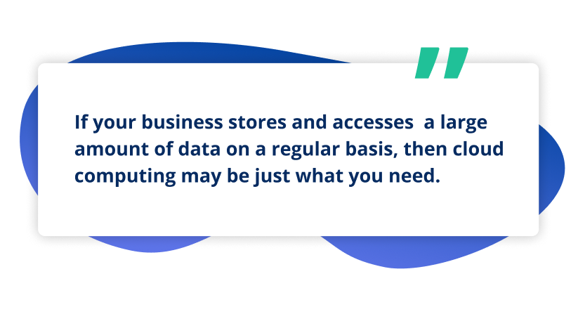
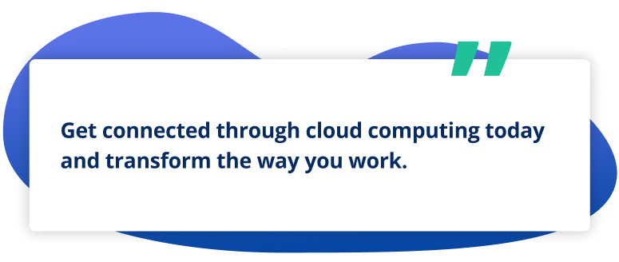

Table Of Contents
What Is the Cloud and How Does It Work?
Many businesses get stuck with servers in their offices that are not easy to access remotely. Cloud computing means you use the internet to access your hardware and software services instead of relying on the physical hardware and software. When you keep everything in the cloud, you don’t have to keep everything in your office! As a business, this will save you space, time, money, and many technology headaches.
If cloud computing sounds intimidating, you may feel more comfortable knowing that you use cloud services in your day-to-day operations at work. That’s right! If you’re familiar with email applications (like Gmail, Yahoo, or Hotmail) then you’re familiar with cloud-based services. Similarly, if you’ve used social networking (Facebook, Instagram, or LinkedIn), then you’ve used cloud-based services.
So while cloud-based computing sounds difficult to use, it’s actually functional, helpful, and likely already on your radar. All it does is take the physical things and turn them into cloud things. This way, you can access everything you need without having to actually keep everything you need on your own computers, bogging them down and causing them to work harder (which will, eventually, lead to big problems that slow down production).
The best part is that cloud-based IT services can be accessed from anywhere. Because your data is stored in a secure cloud-hosted server, everything is always there whenever you need it, no matter where you are.
Benefits of Migrating to the Cloud
If you’re used to the old way of doing things, we understand. Choosing to migrate over to the cloud can be a big change, and many businesses are hesitant to make the switch, but only at first. Once they begin using cloud-based services, they wish they’d transitioned from physical servers sooner!
When you move to the cloud, you can expect big benefits for your business.
-
Cost
Cloud computing helps you save on operational costs related to the upkeep and maintenance of servers and software installed on them.
-
Scale
Cloud computing allows for unlimited storage space, so if you need more to accommodate growth, you’ve got it.
-
Speed
With cloud computing, no longer do you have to wait for servers and software to boot up; instead, it’s all ready to go whenever you need it at blazing speeds, ensuring increased productivity.
-
Security
When you use cloud computing, you don’t have to invest in cybersecurity tools and practices because your cloud will continuously be protected from all types of security threats.
-
Accessibility
Want to be able to access information from anywhere, at any time? Cloud computing makes that possible so remote work easier than ever.
-
Automatic Updates
Leave the notifications for software upgrades and maintenance behind. Most cloud computing automatically gets updates from their business IT support services team, which means you don’t have to worry about them at all.
A turn-key solution for all businesses, cloud computing services work with all your applications and devices (Windows, MacOS, iOS, Android), including access from any modern browser. When you make the move to cloud-based solutions, you can easily move all of your current physical server workload to the cloud, so those systems will stay connected to those desktops.
Risks of Adopting Cloud-based IT
While cloud computing unlocks powerful benefits, as with anything, there are a few risks associated with it.
-
Reduced Control
Because you won’t have physical hardware and software at your office anymore, you’ll lose some control over the infrastructure of it, with the responsibility now being on the cloud service model.
-
Broader Exposure
With cloud computing comes APIs (application programming interfaces), and because these APIs are accessible through the internet, they may experience a broader exposure to exploitation.
-
Incomplete Data Deletion
With your data spread over multiple storage devices, it’s harder to verify complete data deletion, and some pieces of your data could be compromised.
Types of Cloud Services
Cloud services vary, which means you can pick the type of service that best serves your needs.
-
DaaS - Desktop as a Service
Stand up an entire small office without the need to install local desktops. Migrate applications and servers to TruCloud and deploy cloud desktops in minutes. Backup user data and application.
-
ITaaS - IT as a Service
Migrate your full IT stack to the cloud. Run desktops, servers, applications, backup, and security in TruCloud. Integrated with email, collaboration, and file storage in Office 365. Works for businesses of all sizes.
-
VDI - Virtual Desktop Infrastructure
Access programs and secure information from your computer, even without the programs and information physically stored on your computer. Enjoy complete mobility, increased performance, and enhanced functionality.
-
(SaaS) - Software as a Service
Remain connected to the software you need in an easy-to-access cloud format, rather than having it directly on your computer.
Types of Cloud Computing
When you move to the cloud, all the programs you need to run your applications are now located on a remote machine that’s handled by an IT professional. So when you choose to run your applications and store your data on a server system, you’re using cloud-based solutions.
But the type of cloud-based solution you use can vary.
-
Public Cloud
Public cloud solutions provide infrastructure and services to the public. Then, users secure a piece of that infrastructure and network. Think Amazon or Google. While your account is password-protected, there are also billions of other people who use the same service in the same way.
-
Private Cloud
Private cloud solutions are intended for one business and generally contain specific security controls because of it. Sensitive data can be kept private while also meeting industry regulations and criteria. Places like medical facilities and banking institutions use this. Again, they provide the service to many people, but each person’s information is kept confidential.
-
Hybrid Cloud
Hybrid cloud solutions are a mix of both public and private clouds. It’s complex, as there are multiple platforms where data is stored. Some companies may use a hybrid so they can keep certain information secure, but still offer other information available to the public.
Cloud Based IT in the Age of COVID-19
Remote work should be just as productive as in-office work. With cloud-based IT services, it can be made even more productive. Now more than ever, businesses are adopting cloud computing to reduce hardware and data center costs and improve productivity in the workplace. Most businesses choose to receive help from a managed IT support provider. In doing this, they can focus on their work rather than the software and service that allows them to do their work.
If you want to operate more efficiently, then cloud-based services may benefit your business!
Common Cloud Examples
If your business regularly uses services like the ones listed below, then you’ve been working with cloud solutions longer than you may have realized!
-
Microsoft OneDrive
A file hosting service operated by Microsoft as part of its web version of Microsoft Office.
-
Slack
A business communication service built by Slack Technologies.
-
Microsoft Teams
A proprietary business communication and collaboration service developed by Microsoft as part of Microsoft 365.
-

Google Drive
A file storage service developed by Google.
What Is a Cloud MSP?
A cloud MSP means that everything is handled remotely by an IT services provider. This is done in a proactive manner to ensure your business is running smoothly day in and day out.
-
Cost Savings
Team members can use their own personal computers (BYOD), or you can provide inexpensive devices because the performance is in the cloud.
-
Future-Proofed Technology
With the ability to expand and grow with changing technology, the cloud means you’ll be set and ready to incorporate any new future technology.
-
Disaster Recovery
A proactive data backup and disaster recovery process is essential to keep you from experiencing significant downtime and negative impact to your business when disaster strikes.
-
Fast Response Times
With a support team available 24x7x365, you can expect fast response times and issues handled accordingly so you experience minimal disruption to your operations.
-
Complete Auditing
Cloud auditing keeps a pulse on all of your systems through to ensure they’re always running at their best.
TruTech and Cloud Computing
TruCloud is a turn-key solution that offers a fully managed desktop virtualization solution powered by Microsoft Azure. It works with all your applications and devices (Windows, MacOS, iOS, Android), including access from any modern browser. We can move all of your current physical server workload to the cloud as well, so those systems will be connected to those desktops at blazing speeds unlike anything you have experienced before. You shouldn't have to compromise your staff’s productivity for security and mobility.
